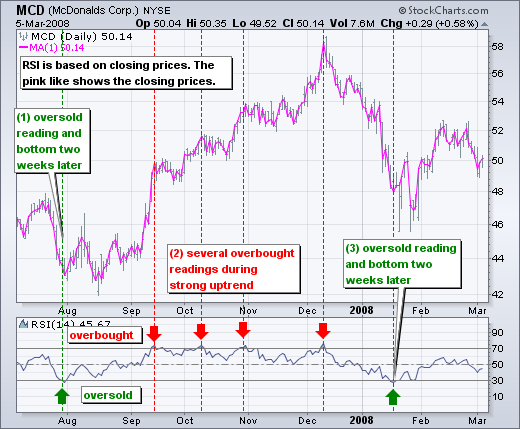

Reverse RSI¶
This is a trading strategy called "Reverse RSI" implemented in Python using the PyAlgoTrading library. The strategy is based on the relative strength index indicator.
Links
Relative Strength Index¶
RSI stands for Relative Strength Index, and it is a popular technical indicator used in the stock market to analyze the strength and momentum of a price trend. The RSI provides insights into whether a stock is overbought or oversold and can help identify potential trend reversals.
Here is a summary of RSI in the stock market:
- The Relative Strength Index (RSI) is a momentum oscillator that measures the speed and change of price movements.
- It compares the magnitude of recent gains to recent losses over a specified period, typically 14 days, and generates a value between 0 and 100.
- The RSI is calculated using a formula that involves averaging the upward price movements (gains) and the downward price movements (losses) over the chosen period.
- A high RSI value (typically above 70) indicates that a stock is overbought, meaning it may have experienced a significant price increase and could be due for a correction or pullback.
- Conversely, a low RSI value (typically below 30) suggests that a stock is oversold, indicating it may have experienced a significant price decline and could be poised for a potential rebound or upward move.
- Traders often use RSI as a tool to identify potential trend reversals, as extreme RSI readings (above 70 or below 30) can signal a potential change in the direction of the price trend.
- Additionally, traders may look for bullish or bearish divergences between the RSI and the price chart, which can provide further indications of a potential trend reversal.
- The RSI is just one tool among many in technical analysis, and it is often used in conjunction with other indicators and analysis techniques to make more informed trading decisions.
Overall, the Relative Strength Index (RSI) is a widely used indicator in the stock market to assess the strength and momentum of price movements. It helps traders identify overbought and oversold conditions, as well as potential trend reversals, which can assist in making trading decisions.
|  |
|---|
| Fig.1 - MCD candle chart (top) and RSI plot (bottom) |
{kind=link}
Strategy Overview¶
The Reverse RSI strategy is a trading strategy based on the Relative Strength Index (RSI) indicator. It generates entry and exit signals based on the reverse crossover of the RSI values from specified overbought and oversold levels.
Strategy Parameters¶
The following parameters can be configured for the strategy:
| Name | Default Value | Expected Value | Description |
|---|---|---|---|
| TIME_PERIOD | None | greater than 0 | Period (number of candles) by which RSI is calculated |
| OVERBOUGHT_VALUE | None | greater than 0 | RSI value above which stocks are considered over-bought |
| OVERSOLD_VALUE | None | greater than 0 | RSI value below which stocks are considered over-sold |
Crossover Calculation¶
The get_crossover_value method calculates the crossover values for the RSI indicator using historical data of the instrument. It compares the RSI values with the overbought and oversold levels to determine the entry and exit actions. The method returns the crossover values for oversold and overbought levels.